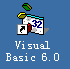
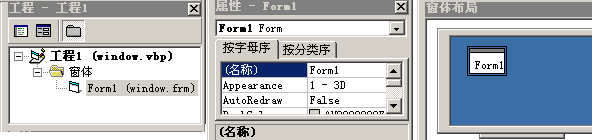

VB程序设计基础
作者：TeliuTe 来源：基础教程网
VB的程序设计窗口，是由几部分共同组成的，下面我们来看一个练习；
1、启动VB
1）双击桌面上的图标，或者点开始菜单，运行VB；

2）在出来的新建窗口中，点“打开”按钮，新建一个标准EXE工程，然后进入主窗口；
2、程序窗口
1）主窗口的上边分别是标题栏、菜单栏和工具栏，包含常用的操作命令；
2）主窗口的左边是工具箱，里面有设计程序所需的各个控件；
3）主窗口的中间是工作区，可以对窗体进行设计、输入代码等操作；
4）主窗口右侧是分三栏，上边是工程窗口，中间是属性窗口，下边是布局窗口，属性窗口用得比较多；

3、修改属性
1）在右侧的属性窗口中，找到 BackColor，点一下它右边颜色值的下拉按钮，选择“调色板-淡紫色”；
2）以 backcolor 为文件名保存一下文件，注意要保存两次，然后点运行按钮，出来一个淡紫色的小窗口；
3）点菜单“文件-生成form.exe”，以“背景色”为文件名，保存到自己文件夹，这是一个可执行程序，可以在文件夹中双击运行；
本节学习了VB程序设计的主窗口，如果你成功地完成了练习，请继续学习下一课内容；
本教程由86团学校TeliuTe制作|著作权所有
基础教程网：http://teliute.org/
美丽的校园……
转载和引用本站内容，请保留版权信息和本站链接。